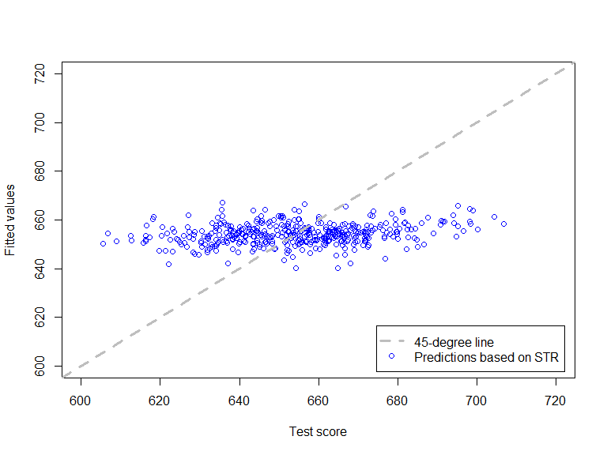
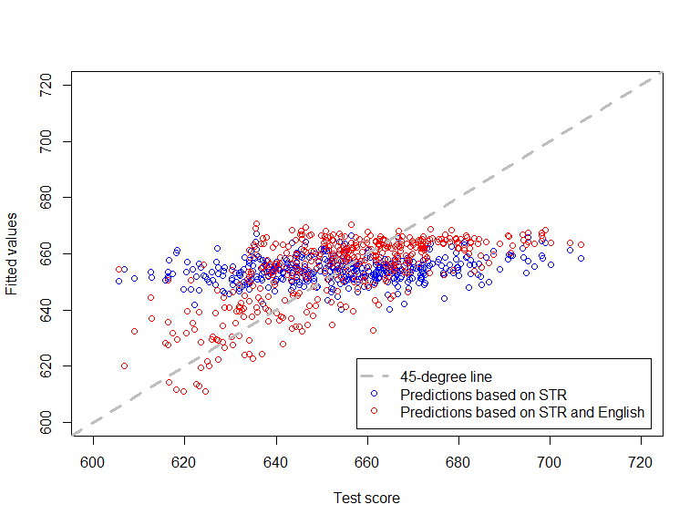
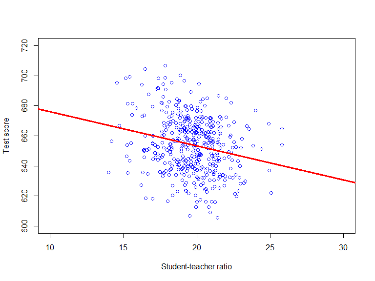
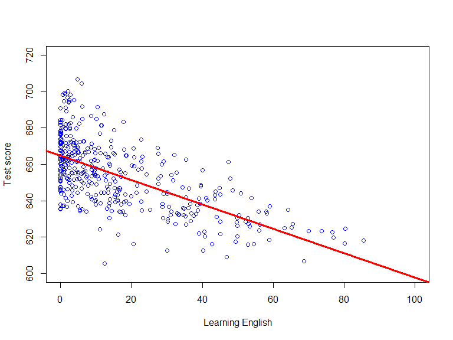
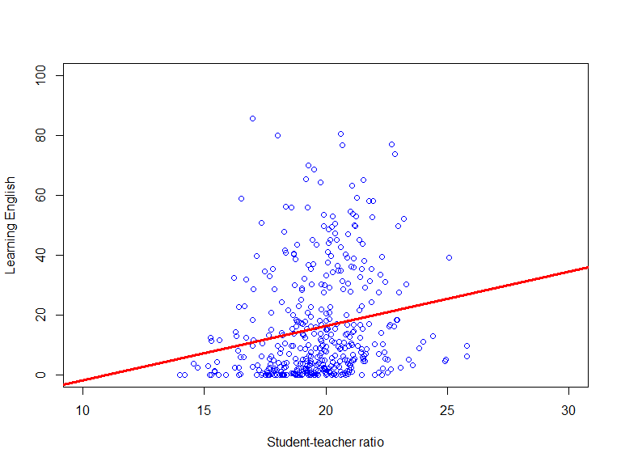
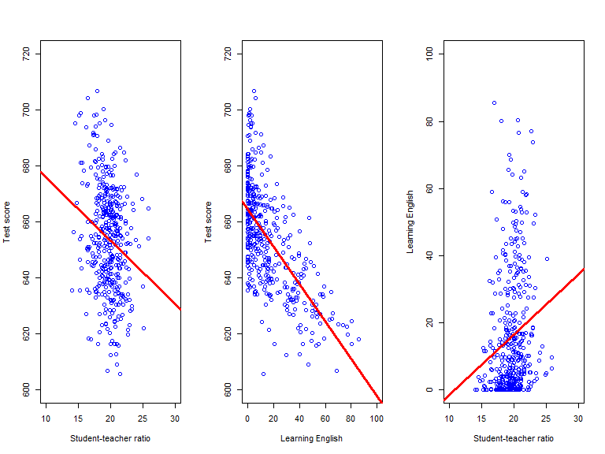
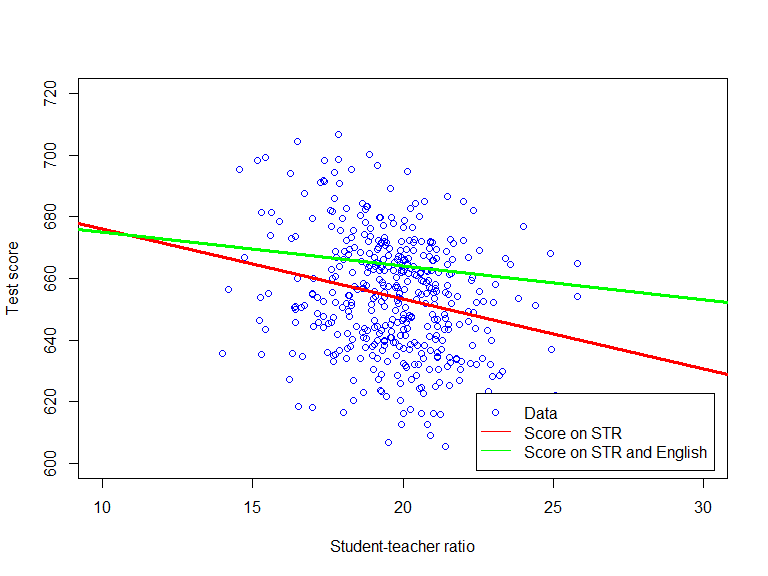

Based on Stock and Watson, ch. 6
Test score, \(Score\), depends on class size, \(STR\), and percentage with English as a second language, \(Eng\)
Consider the linear population regression function
\[\mathrm{E}(Score|STR,English) = \beta_0 + \beta_1 STR + \beta_2 Eng\]
The regression function is the relationship b/w \(Score\), \(STR\) and \(Eng\) that holds on average
\[\beta_1 = \frac{\mathrm{E}(Score|STR+\Delta,Eng) - \mathrm{E}(Score|STR,Eng)}{\Delta}\]
\(u\) is the prediction error:
\[u \equiv Score - \mathrm{E}(Score|STR,Eng)\]
Multiple population regression model:
\[Score = \beta_0 + \beta_1 STR + \beta_2 Eng + u\]
The error term \(u\) contains all determinants of \(Score\) that are not \(STR\) nor \(Eng\)
The multiple regression model generalizes easily to encompass \(K\) regressors
Estimation problem: learn about \(\beta_0\), \(\beta_1\), and \(\beta_2\) from random sample from the population
\[(Score_i,STR_{i},Eng_{i}; i=1,...,n)\]
We study the OLS estimators \(\hat{\beta}_0\), \(\hat{\beta}_1\), and \(\hat{\beta}_2\) (see pre-recorded lectures for details)
##
## Call:
## lm(formula = Score ~ STR + english, data = CASchools)
##
## Residuals:
## Min 1Q Median 3Q Max
## -48.845 -10.240 -0.308 9.815 43.461
##
## Coefficients:
## Estimate Std. Error t value Pr(>|t|)
## (Intercept) 686.03224 7.41131 92.566 < 2e-16 ***
## STR -1.10130 0.38028 -2.896 0.00398 **
## english -0.64978 0.03934 -16.516 < 2e-16 ***
## ---
## Signif. codes: 0 '***' 0.001 '**' 0.01 '*' 0.05 '.' 0.1 ' ' 1
##
## Residual standard error: 14.46 on 417 degrees of freedom
## Multiple R-squared: 0.4264, Adjusted R-squared: 0.4237
## F-statistic: 155 on 2 and 417 DF, p-value: < 2.2e-16## Parameter | Coefficient | SE | 95% CI | t(417) | p
## ---------------------------------------------------------------------
## (Intercept) | 686.03 | 8.73 | [668.88, 703.19] | 78.60 | < .001
## STR | -1.10 | 0.43 | [ -1.95, -0.25] | -2.54 | 0.011
## english | -0.65 | 0.03 | [ -0.71, -0.59] | -20.94 | < .001\[\hat{Score}_i = \hat{\beta}_0 + \hat{\beta}_1 STR_i; \quad i = 1,2,...,n\]

\[\hat{Score}_i = \hat{\beta}_0 + \hat{\beta}_1 STR_i + \hat{\beta}_2 Eng_i; \quad i = 1,2,...,n\]

Adding additional regressors always increases the fit of the regression (i.e. always lead to better in-sample predictions)
May lead to “over-fit” of peculiarities of the sample, not improve ability to predict out-of-sample
Goodness-of-fit measures in multiple regression must reflect this trade-off:
\[\overline{R}^2 = 1-\frac{n-1}{n-k-1} \frac{SSR}{TSS}\]
where \(k\) is number of regressors (excluding the constant)
\[Score_i = \beta_0 + \beta_1 STR_i + u_i; \quad i = 1,2,...,n\]

\[Score_i = \beta_0 + \beta_1 Eng_i + u_i; \quad i = 1,2,...,n\]

\[Eng_i = \beta_0 + \beta_1 STR_i + u_i; \quad i = 1,2,...,n\]


\[Score_i = \beta_0 + \beta_1 STR_i + \beta_2 Eng_i + u_i; \quad i = 1,2,...,n\]

The multiple regression model is a linear regression model w/ multiple regressors
Coefficients in multiple regression model are partial effects
The OLS minimizes sum of squared residuals, as in the simple linear regression model
The multiple regression model:
Improved in-sample fit
Controls for confounding effects